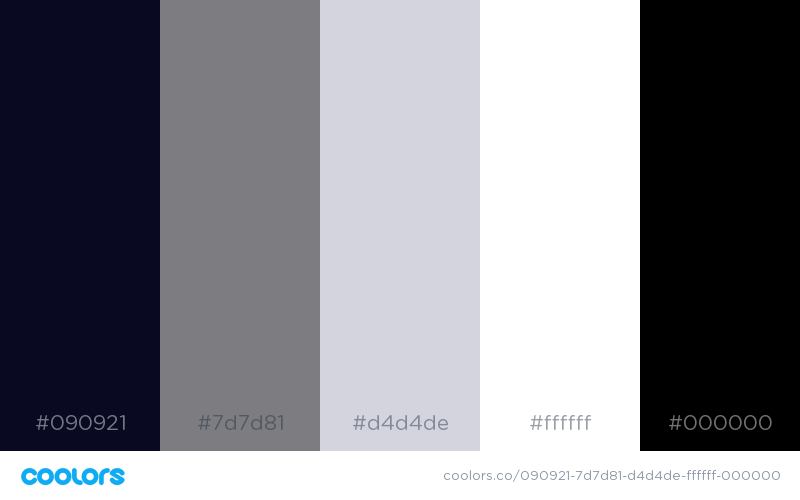

Color Scheme
Color Explanation
| #090921 (Rich Black) |
Primary background color for header, nav, footer, and tables. |
| #7D7D81 (Trolley Gray) |
Primary border color. |
| #D4D4DE (Light Gray) |
Secondary font color - used for dark backgrounds. Primary background color. |
| #FFFFFF (White) |
Used for anything else. |
| #000000 (Black) |
Primary font color. |